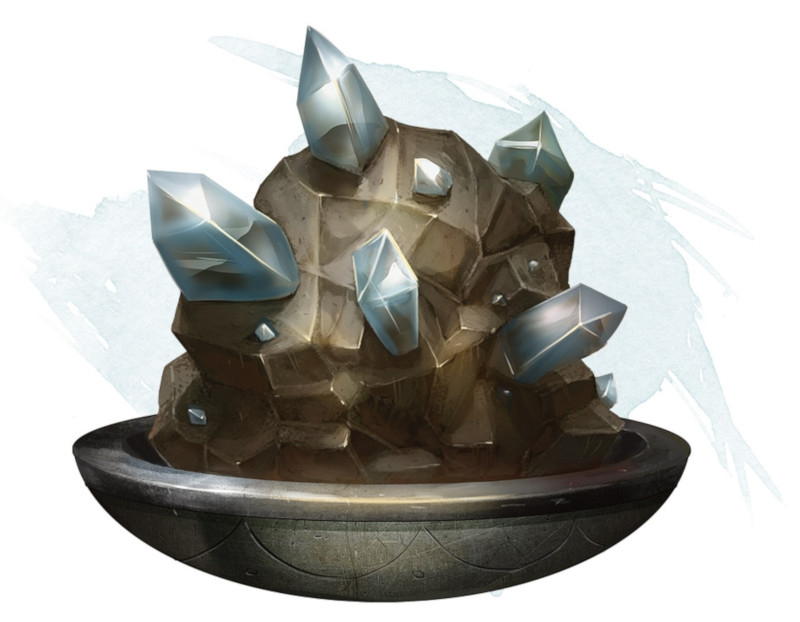

Stone of Controlling Earth Elementals
Wondrous item, rare
If the stone is touching the ground, you can use an action to speak its command word and summon an earth elemental, as if you had cast the conjure elemental spell. The stone can't be used this way again until the next dawn. The stone weighs 5 pounds.
Dungeon Master´s Guide (SRD)
